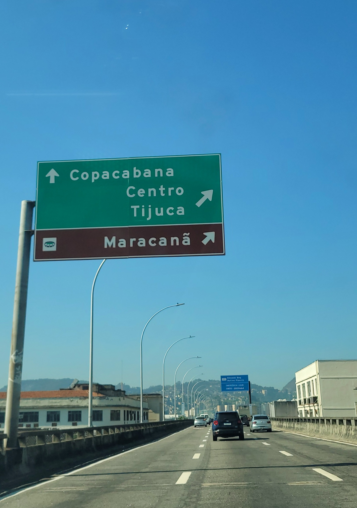
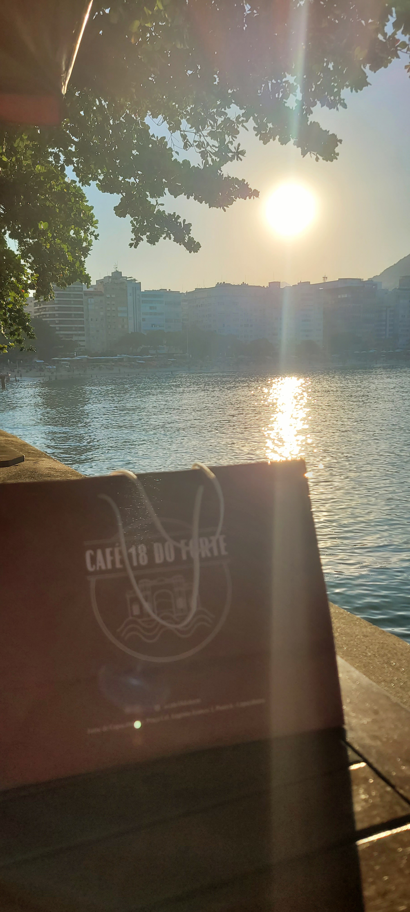
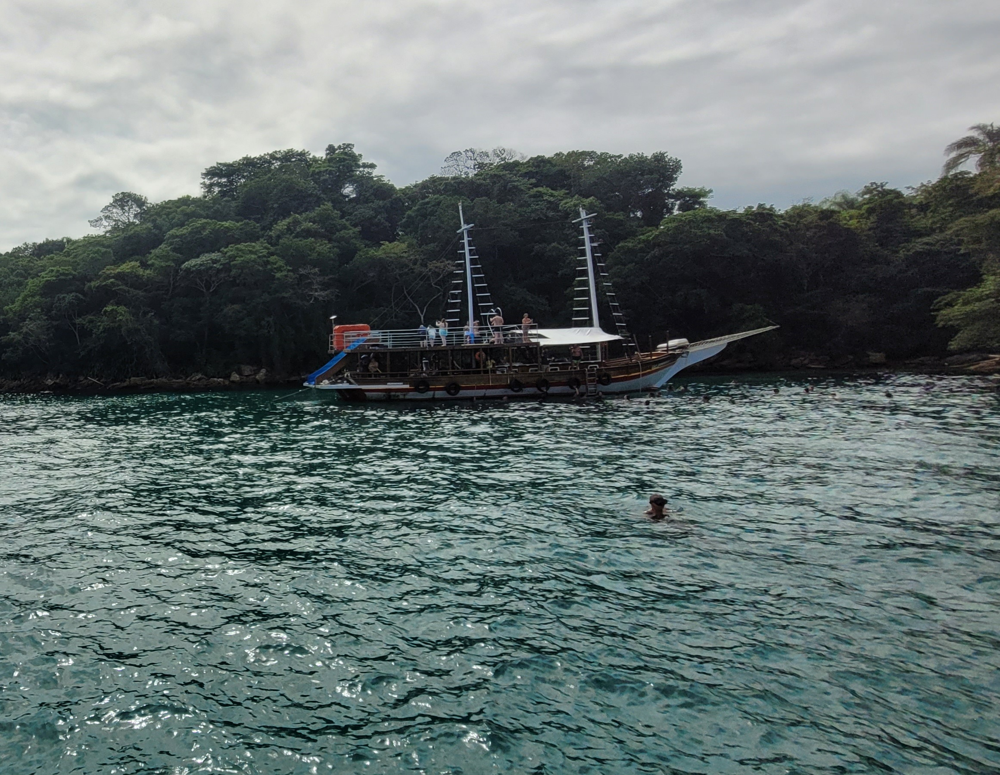

EQ TRAVEL 360
Guías de Ruta por el Mundo
EQ TRAVEL
★
360°
PASAPORTE
Guías de Ruta por el Mundo
La Habana Vieja, El Capitolio, paseo en autos clásicos de los años 50 (*almendrones*), el ambiente del Malecón al atardecer y el místico Son cubano.
Folclore tradicional, cultura gaucha, el teleférico al San Bernardo, batallas de freestyle juvenil en parques y paseos por Salta la Linda.
Santiago, Calle Caracol, San Pedro de Atacama, observación de estrellas, Geysers del Tatio, cruce por el Paso de Jama y el majestuoso Volcán Ollagüe.
El majestuoso Salar de Uyuni, la cordillera andina, el teleférico de La Paz, Huayna Potosí y el Estadio Municipal de El Alto.
Reserva Nacional de Paracas, Miraflores (Lima), Cusco Imperial, Machu Picchu, Salkantay, Camino Inca y Vinicunca.
Quito (Mitad del Mundo, Basílica del Voto Nacional), Volcán Chimborazo (Condor Cocha 5,100m), Tulcán e Ipiales (Santuario Las Lajas).
Río de Janeiro (Cristo Redentor/Corcovado), el paraíso tropical de Ilha Grande y las impresionantes Cataratas del Iguazú.
Pirámides del Sol y de la Luna, la maravilla maya de Chichén Itzá, buceo en Cozumel y playas de Cancún.
Tierras del Norte (Northern Lights), Toronto con su Torre CN y Lago Ontario, y el encanto francés de Montreal.
Nueva York, Miami (South Beach), Tampa, Georgia y Carolina del Sur con sus tradiciones e historia sureña.
Logística para conquistar la cima más alta (Cerro Chirripó 3,820m) y recorrer la historia del San José Free Walking Tour.
Ushuaia (Fin del Mundo), viñedos de Mendoza y la cultura porteña de Buenos Aires.
Logística para Anchorage, glaciares de Denali y rutas por la gran naturaleza salvaje de Alaska.
Recorridos detallados por la gastronomía de Lyon, las ruinas romanas de Nîmes, la historia de Orléans y Chartres, París, Londres y más.
San Salvador (BINAES), Santa Ana (Catedral Gótica), Lagos de Coatepeque, Volcán Santa Ana e Izalco.
Cinta Costera, Canal de Panamá (Esclusas de Miraflores), Albrook Mall, ascenso al Volcán Barú (3,475m) y Bocas del Toro.
León, Sandboarding en Cerro Negro, Tour Flor de Caña, Volcán San Cristóbal, Volcán Masaya y Volcán Concepción.
Isla de Flores (Petén), San Juan La Laguna (Cacao/Fuego), Chichicastenango, Tajumulco, Tikal y Antigua.
Playa Omoa, Puerto Cortés, Puerto Corinto, San Pedro Sula y las Ruinas de Copán.
Cayo Caulker, Belice City, Belmopán, San Ignacio y los sitios arqueológicos Cahal Pech y Xunantunich.
Cerro Monserrate, el ambiente bohemio de La Candelaria / La Macarena, Chorro de Quevedo y el Centro Histórico.
Colonia del Sacramento (Uruguay), Ciudad del Este (Paraguay), compras, cultura del Tereré y tradiciones Guaraníes.
Qué hacer: Recorrer la Plaza de la Catedral, la Plaza de Armas, el Templete, caminar por la calle Obispo y maravillarse con la majestuosa arquitectura del Capitolio Nacional de La Habana.
Qué hacer: Recorrer las peñas tradicionales de la Balcarce, vivir de cerca el legado cultural de los gauchos salteños, la poesía de sus canciones y disfrutar de unas auténticas empanadas cortadas a cuchillo con buen vino torrontés.
Qué hacer: Recorrer la icónica Calle Caracol (Galería Caracol en Providencia), visitar el Cerro San Cristóbal, la Plaza de Armas y disfrutar de la gastronomía chilena en el Mercado Central.
Qué hacer: Recorrido en 4x4 por la planicie de sal más grande del mundo, Isla Incahuasi (con cactus gigantes), el Cementerio de Trenes y los efectos fotográficos de perspectiva en temporada seca o el efecto espejo en época de lluvias.
Qué hacer: Tour en lancha hacia las Islas Ballestas para observar lobos marinos, aves guaneras y el famoso geoglifo "El Candelabro", además de recorrer los acantilados de la Reserva Nacional de Paracas donde el desierto se encuentra con el Océano Pacífico.
Qué hacer: Caminar por el Centro Histórico mejor conservado de América, subir a las torres neogóticas de la Basílica del Voto Nacional, tomar el bus hacia el monumento a la Mitad del Mundo (Latitud 0°0'0") y subir al Teleférico para ver los volcanes surrounding Quito.
Dónde quedarse: Hoteles boutique en el Centro Histórico o hostales en La Mariscal.
Qué hacer: Tren del Corcovado para subir al Cristo Redentor, teleférico al Pão de Açúcar, atardecer en Arpoador y recorrer el barrio histórico de Santa Teresa.



Qué hacer: Recorrer la Calzada de los Muertos, admirar la Pirámide del Sol y la Pirámide de la Luna.
Tip: Salir temprano a las 7 AM para evitar el calor excesivo y las aglomeraciones.
Qué hacer: Subir al mirador de cristal de la famosa CN Tower, caminar por el malecón del Lago Ontario y tomar el ferry a las Toronto Islands.
Qué hacer: Times Square, Central Park, estatua de la Libertad (Ferry gratuito de Staten Island) y vistas nocturnas desde la cima del Empire State o Summit One Vanderbilt.
Qué hacer: Navegación por el Canal Beagle hacia el Faro del Fin del Mundo, caminata entre pingüinos en Isla Martillo y trekking en el Parque Nacional Tierra del Fuego.
Qué hacer: Recorrer la península de Kenai, avistamiento de ballenas en Seward y tren panorámico hacia los glaciares.
Qué hacer: Explorar el centro histórico (*Vieux Lyon*), cruzar los pasadizos secretos o *traboules*, subir a la Basílica de Notre-Dame de Fourvière para obtener la vista panorámica de la confluencia del Roine y el Saona, y cenar en un típico *Bouchon* degustando la auténtica gastronomía lionesa.
Qué hacer: Senderismo exigente de 14.5 km hasta Base Crestones y remate a la cumbre (3,820m). En días despejados se observan ambos océanos.
Tip: Reserva previa obligatoria en el Refugio Crestones de SINAC.
Qué hacer: Visita a la Biblioteca Nacional (BINAES) abierta 24/7, Palacio Nacional y Plaza Libertad.
Qué hacer: Esclusas de Miraflores en el Canal de Panamá, Cinta Costera y compras masivas en Albrook Mall.
Qué hacer: Sandboarding por las laderas del Cerro Negro, tour de Ron Flor de Caña en Chichigalpa y trekking al San Cristóbal.
Qué hacer: Recorrer las calles de la isla en el lago Petén Itzá y salida temprana a las ruinas mayas de Tikal.
Qué hacer: Explorar la escalinata de jeroglíficos mayas y pasear por el pueblo empedrado probando café de montaña.
Qué hacer: Snorkel en Hol Chan con tiburones nodriza y relajarse en "The Split" con vibra Garífuna.
Qué hacer: Vista desde Monserrate (3,152m), caminata por La Candelaria, chicha en el Chorro de Quevedo y cena en La Macarena.
Qué hacer: Caminar por la "Calle de los Suspiros", faro histórico y atardecer sobre el Río de la Plata.